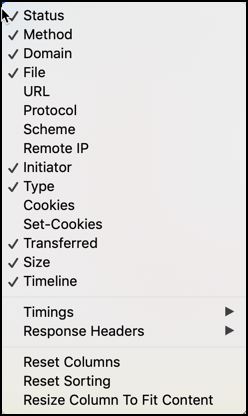
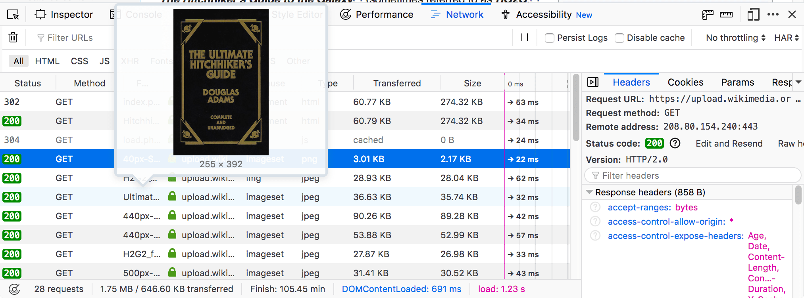
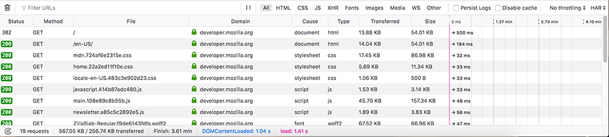
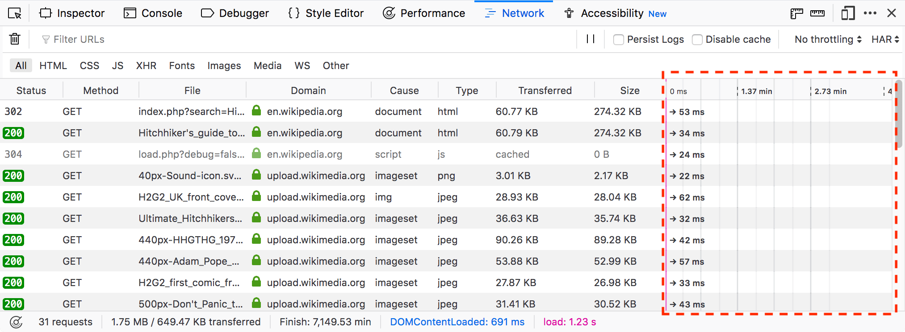
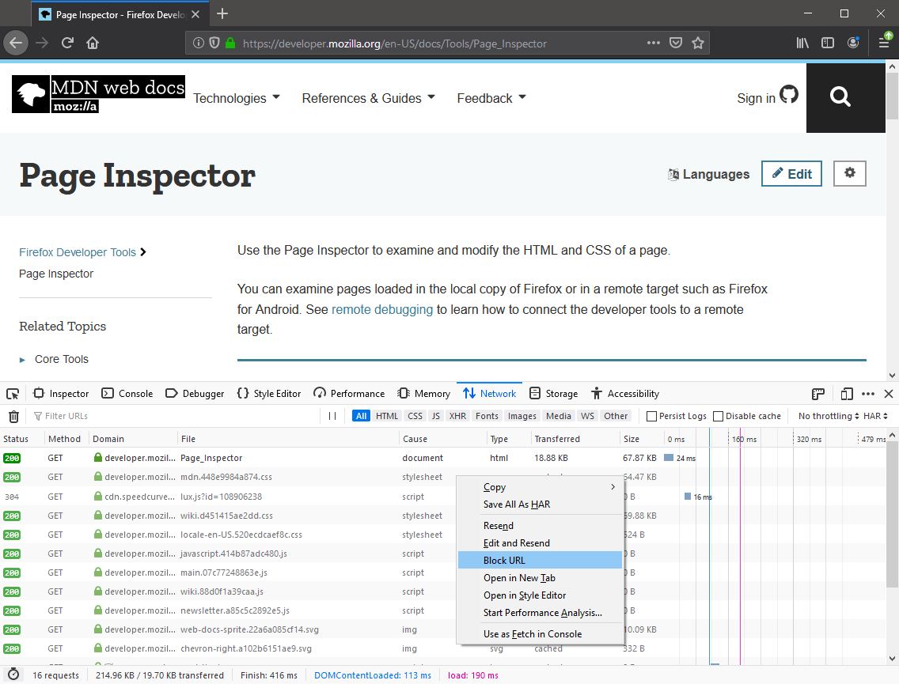
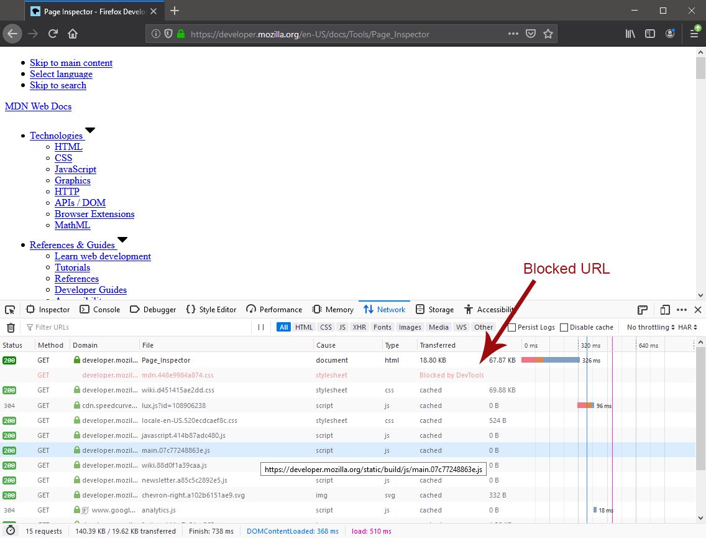
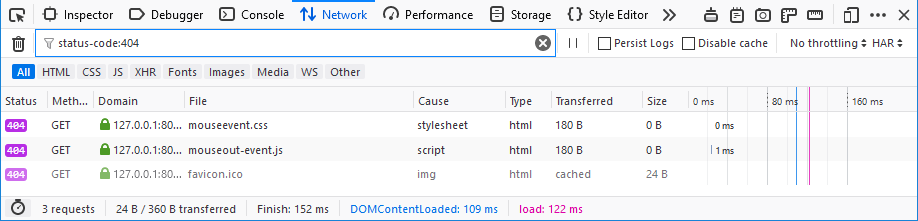
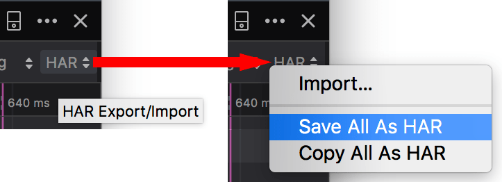

By default, the Network Monitor is cleared each time you navigate to a new page or reload the current page. You can override this behavior by checking "Enable persistent logs" in the Settings.
By default, the Network Monitor is cleared each time you navigate to a new page or reload the current page. You can override this behavior by checking "Enable persistent logs" in the Settings.{{ToolsSidebar}}
The request list of the Network Monitor shows a list of all the network requests made in the course of loading the page.
By default, the Network Monitor shows a list of all the network requests made in the course of loading the page. Each request is displayed in its own row:
By default, the Network Monitor is cleared each time you navigate to a new page or reload the current page. You can override this behavior by checking "Enable persistent logs" in the Settings.
You can toggle columns on and off by right-clicking on the table header and choosing the specific column from the context menu. A Reset Columns command is available on the context menu to reset the columns to their initial configuration.
You can also change the width of the columns to help make the information you are looking for easier to view. The mouse pointer changes to a resize icon when you move it over the border of a column. You can drag to manually set the size of column. Starting in Firefox 76 you can double-click a column divider to resize the column to the left of it to fit its contents.
The Reset Columns command on the context menu also resets the width of the columns to the default values.
{{EmbedYouTube("5fbuDO2s9Pk")}}
Clicking the column header label sorts the request list by that column. You can reset the sort to the default by selecting "Reset Sorting" from the context menu.

Here is a list of all available columns:
devtools.netmonitor.audits.slow setting.Content-type of the response.If the request is for an Image, hovering over its filename shows a preview of the image in a tooltip:

The Network Monitor displays an icon in the Domain column:

This gives you extra information about the security status of the request:
| Icon | Meaning |
|---|---|
| HTTPS | |
| Weak HTTPS (for example, a weak cipher was used) | |
| Failed HTTPS (for example, a certificate was invalid) | |
| HTTP | |
| Localhost | |
| Indicates that the URL belongs to a known tracker that would be blocked with content blocking enabled. |
The request list also displays a timeline for the different parts of each request.

Each timeline is given a horizontal position in its row relative to the other network requests, so you can see the total time taken to load the page. For more details on the color-coding used here, see the section on the Timings page.
Starting in Firefox 45, the timeline also contains two vertical lines:
DOMContentLoaded event is triggered.load event is triggered.If you want to view your page as it would look without a resource (e.g., if it were blocked by the browser or an extension), you can block requests matching patterns you specify.
Other actions you can take with Request Blocking:
You can also block a URL from the request list:



Note: (Starting in Firefox 80) You can also block and unblock URLs from the Web Console, using the :block and :unblock helper commands. These accept any string, and affect any URL containing the string.
You can filter requests by content type, by whether they are XMLHttpRequests or WebSocket requests, or by request properties.
| Filter type | How to apply |
|---|---|
| Content type | Use the buttons in the toolbar (HTML, CSS, JS). |
| {{Glossary("XHR (XMLHttpRequest)", "XHR")}} requests | Use the XHR button in the toolbar. |
| WebSocket connections | Use the WS button in the toolbar. You can filter by plain text (in which case the text is used to find partial matches; entering "for" will match any message that contains the word "for") or—as of Firefox 75—using regular expressions (by writing the regexp bracketed within slashes; "/.+Corp.*/" will look for any occurrence of "Corp" which has at least one character before it and may or may not have any characters after it, for example).
The third-party add-on WebSocket Sniffer may be helpful as well. |
| URL |
Use the Filter URLs box in the toolbar. You can focus it by clicking in the filter box, or by pressing Ctrl + F (or Cmd + F on a Mac); then start typing. The list of network requests is filtered to include only requests that contain your filter string, in either the Domain or the File portions. You can filter requests that don't contain your filter string by prefixing your query with the "-" operator. For example, the query "-google.com" will show all requests that don't have "google.com" in the URL. |
| Request properties | Use the search box in the toolbar. See next section. |
The search box recognizes specific keywords, which can be used to filter the requests by specific request properties. Those keywords are followed by a colon and a related filter value. The filter values are matched case insensitive. Prepending a minus (-) negates the filter. You can combine different filters together by separating them with a space.
| Keyword | Meaning | Examples |
|---|---|---|
status-code |
Shows resources that have the specific HTTP status code. | status-code:304 |
method |
Shows resources that have were requested via the specific HTTP request method. | method:post |
domain |
Shows resources coming from a specific domain. | domain:mozilla.org |
remote-ip |
Shows resources coming from a server with the specified IP. | remote-ip:63.245.215.53remote-ip:[2400:cb00:2048:1::6810:2802] |
cause |
Shows resources matching a specific cause type. The types can be found in the description of the cause column. | cause:jscause:stylesheet |
transferred |
Shows resources having a specific transferred size or a transferred size close to the one specified. k can be used as suffix for kilobytes and m for megabytes, e.g. the value 1k is equivalent to 1024. |
transferred:1k |
size |
Shows resources having a specific size (after decompression) or a size close to the one specified. k can be used as suffix for kilobytes and m for megabytes, e.g. the value 1k is equivalent to 1024. |
size:2m |
larger-than |
Shows resources that are larger than the specified size in bytes. k can be used as suffix for kilobytes and m for megabytes, e.g. the value 1k is equivalent to 1024. |
larger-than:2000-larger-than:4k |
mime-type |
Shows resources that match the specified MIME type. | mime-type:text/htmlmime-type:image/pngmime-type:application/javascript |
is |
is:cached and is:from-cache shows only resources coming from cache.is:running shows only resources, which are currently being transferred. |
is:cached-is:running |
scheme |
Shows resources transferred via the given scheme. | scheme:http |
has-response-header |
Shows resources that contain the specified HTTP response header. | has-response-header:cache-controlhas-response-header:X-Firefox-Spdy |
set-cookie-domain |
Shows the resources that have a Set-Cookie header with a Domain attribute that matches the specified value. |
set-cookie-domain:.mozilla.org |
set-cookie-name |
Shows the resources that have a Set-Cookie header with a name that matches the specified value. |
set-cookie-name:_ga |
set-cookie-value |
Shows the resources that have a Set-Cookie header with a value that matches the specified value. |
set-cookie-value:true |
regexp |
Shows the resources having a URL that matches the given {{Glossary("regular expression")}}. | regexp:\d{5} |
For example, to find all 404, not found, errors, you can type "404" into the search and auto-complete suggests "status-code:404" so you'll end up with something like this:

Use the Search panel to run a full-text search on headers and content.
Other ways to use the search panel:
Context-clicking on a row in the list displays a context menu with the following options:
| Menuitem | Description |
|---|---|
| Copy > Copy URL | Copies the URL. |
| Copy > Copy as cURL | Copies the network request to the clipboard as a cURL command, so you can execute it from a command line. See Copy as cURL, below. |
| Copy > Copy as Fetch | Copies the request as a call to the fetch() method, including the URL and any settings object. |
| Copy > Copy Request Headers | Copies the request's header to the clipboard. |
| Copy > Copy Response Headers | Copies the headers of the response for this request, to the clipboard. |
| Copy > Copy Response | Copies the entire response that was sent for this request. |
| Copy > Copy All As HAR | Creates an HTTP Archive (HAR) for all requests listed, and copies it to the clipboard. |
| Save All As HAR | Creates an HTTP Archive (HAR) for all requests listed, and opens a file dialog, so you can save it to a file. |
| Resend | Resends the request as it was originally sent with no changes made. |
| Edit and Resend | Opens an editor enabling you to edit the request's method, URL, parameters, and headers, and resend the request. |
| Block URL | Blocks the selected URL for future requests. See Blocking a specific URL from the Request List. |
| Open in New Tab | Resends the request in a new tab — very useful for debugging asynchronous requests. |
| Open in Style Editor | For a CSS resource, opens it in the Style Editor. |
| Start Performance Analysis | |
| Use as Fetch in Console | Submits the request as a call to the fetch() method in the console. |
The command may include the following options:
-X [METHOD] |
If the method is not GET or POST |
--data |
For URL encoded request parameters |
--data-binary |
For multipart request parameters |
--http/VERSION |
If the HTTP version is not 1.1 |
-I |
If the method is HEAD |
-H |
One for each request header. If the "Accept-Encoding" header is present, the cURL command includes |
--globoff |
Suppresses cURL's globbing (wildcard matching) feature if the copied URL includes square bracket characters ([ or ]). (Starting in Firefox 76) |
The HAR format enables you to export detailed information about network requests. In addition to the Copy and Save menu items for HAR in the context menu, similar menu items are available in the HAR dropdown menu in the toolbar, as well as an Import menuitem.

The following articles cover different aspects of using the network monitor: